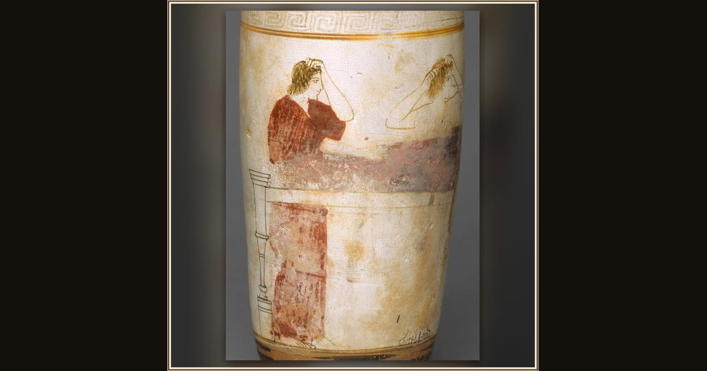

Terracotta lekythos (oil flask)
Sabouroff Painter · ca. 450 BCE · met
A white-ground oil flask shows two mourners beside a bier. Thucydides' account of the public funeral includes an empty bier for missing dead and women mourning at the burial (2.34.3). Explore its place in Thucydides's History of the Peloponnesian War, Book II,